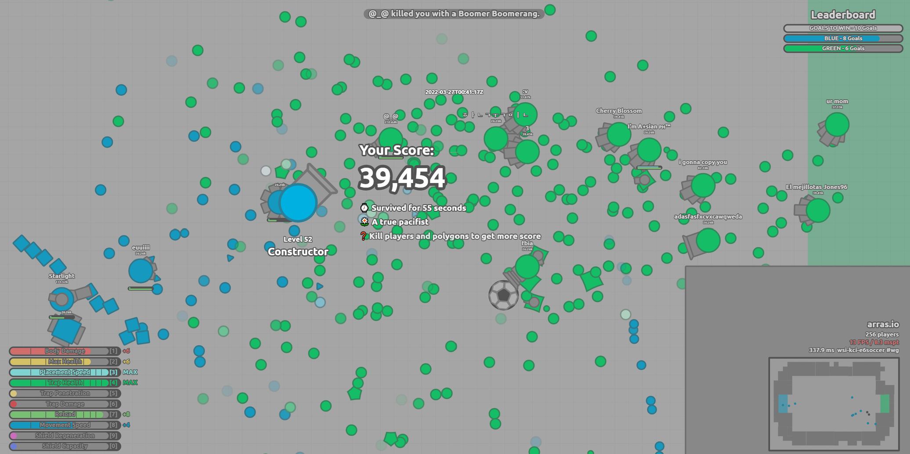
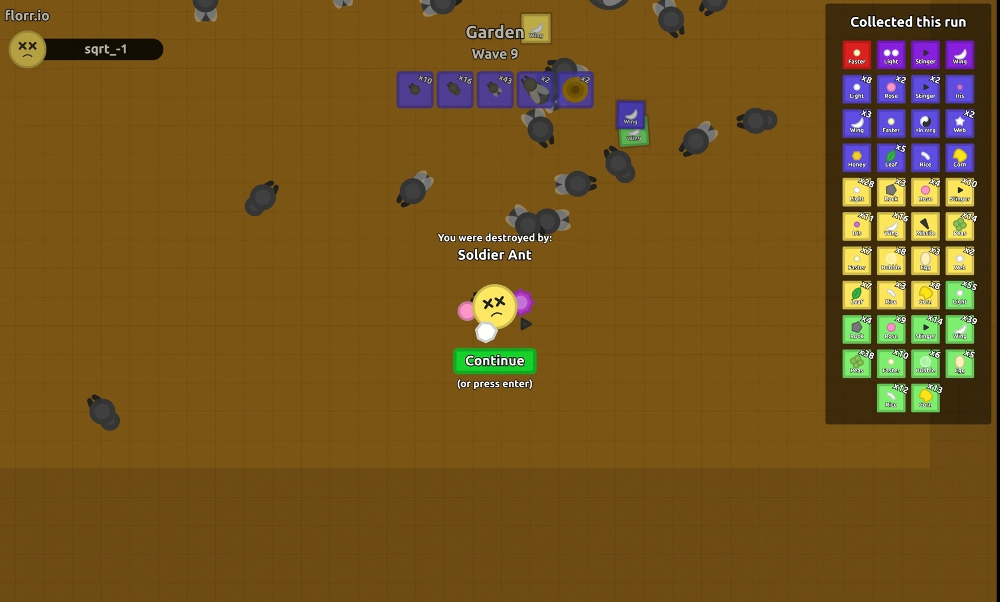

io-record
My io game achievements
Funny stuff
"Teamers"
2022/03/27

Soccer mode(now removed) in arras.io. Some players in the Green team used the same tank, played until every teammate died, and respawned with another tank...
Blue team's nightmare when they switched to Penta Shots. lol
The Penta Shots got killed by overseers(they cannot use 1 tank in 2 runs), and when Green players were staying in the base and clicking skill points, Blue trappers scored several goals and won the game. :(
I quitted arras.io in January 2023. It was an awesome game.
"Singleplayer game"
2022/07/21

Wave mode(now removed) in florr.io. Trying solo game with 5 Epic petals(not wheel-of-death build).
In this run i got my first Legendary petal(Faster) and collected 2 more(Web & Pincer) in the next two weeks.
My first florr.io account has been deleted(not banned) in August. In February 2023 I created a new one and got level 90, 8 slots with full Legendaries in less than a week...
Good f*kin' job M28. I'm away from this game now.